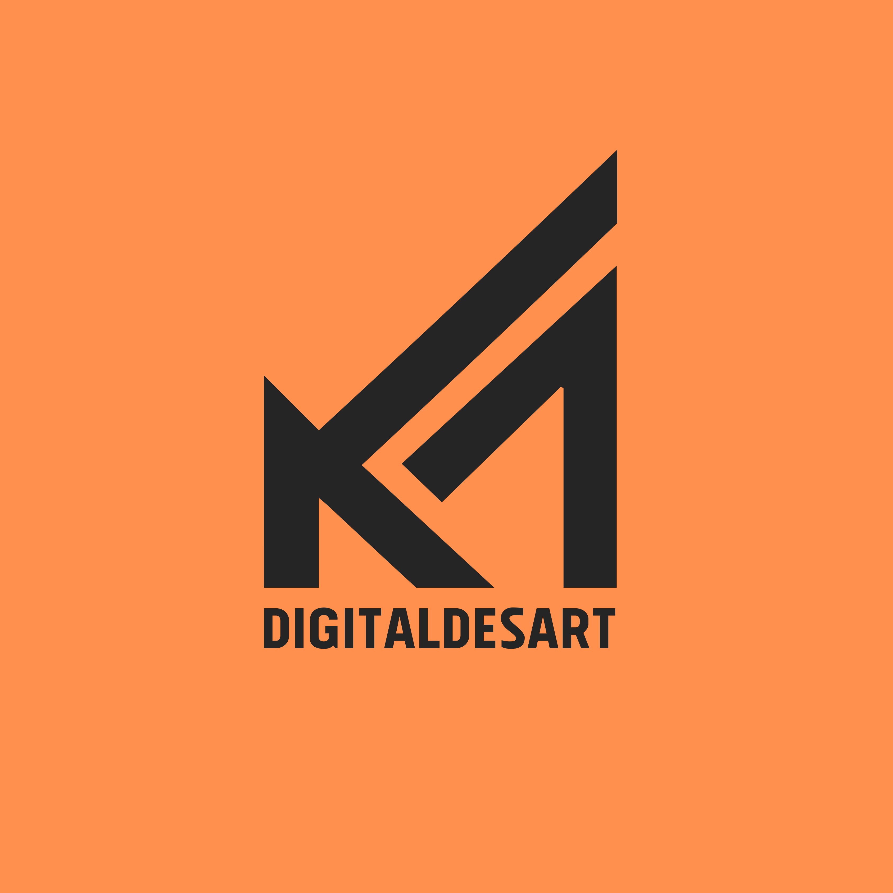
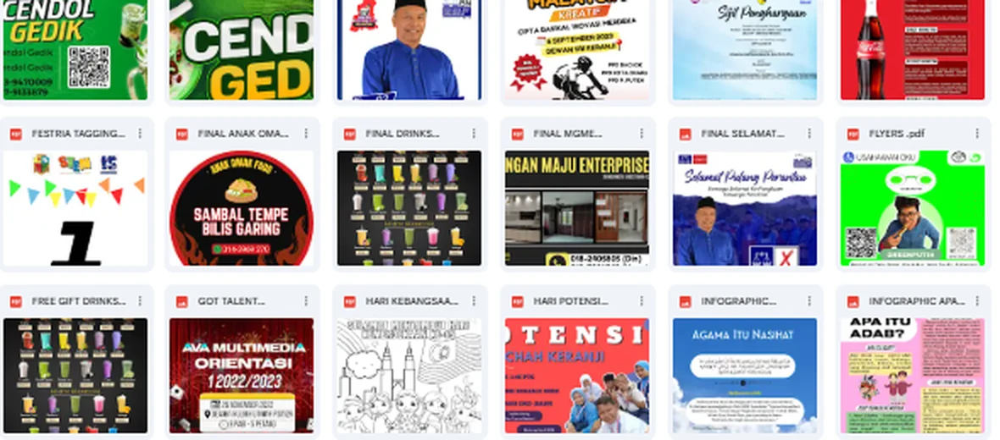
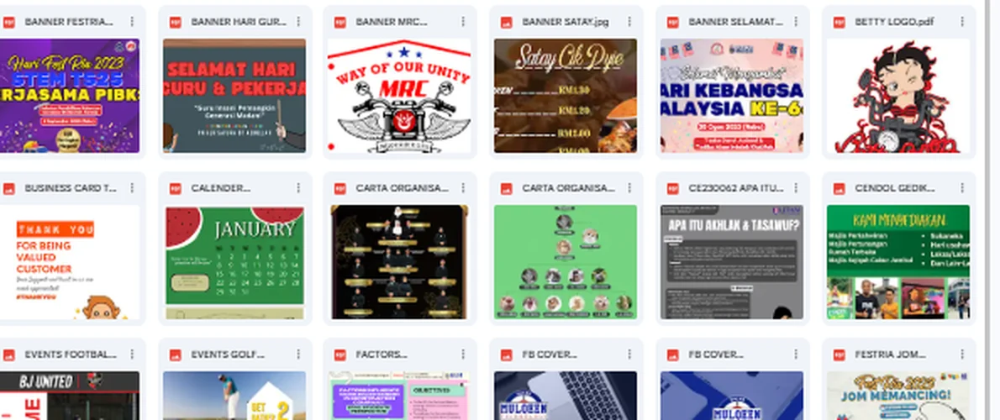
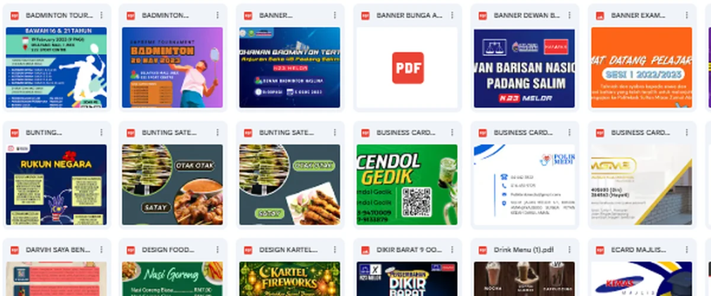
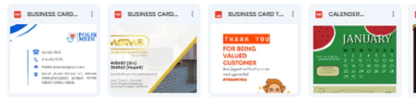
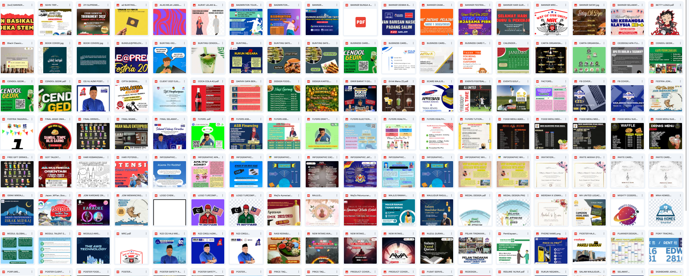

Graphic
Design
Clear, attention-grabbing visuals built around your message, audience and brand.
- Posters & flyers
- Banners & bunting
- Social media graphics
- Menus & promotional artwork
- Infographics & corporate materials
- Logo & basic branding
Graphic design and video editing for businesses that want to look sharp, communicate clearly and stay remembered.

KASTUDIOPRODUCTION is a creative service studio focused on graphic design and video editing. From a single poster to a complete campaign, we turn raw information into visuals people actually want to look at.
Clear, attention-grabbing visuals built around your message, audience and brand.
Fast, polished edits made for social media, promotions, events and business communication.









Food businesses. Events. Corporate work. Education. Social campaigns. Posters. Menus. Infographics. Our portfolio is intentionally broad because every client needs a different visual solution.
Have a brief? Let's talk ↗You bring the objective. We handle the visual thinking, production and polish.
Tell us what you need, your deadline, size, references and where the final artwork will be used.
We translate the brief into a visual direction, layout or editing approach before production.
Designing, editing, refining and preparing the work for its final platform or print format.
Final files are organised and exported in the formats you actually need.
Send the basics. We’ll continue the conversation on WhatsApp and work out the best package for your project.